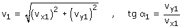

|
Resolución de problemas En un problema de tiros nos darán los datos necesarios para obtener las ecuaciones de un movimiento y nos pedirán los valores de las variables: t, x, y, vx, vy en situaciones posteriores a la inicial Método Se plantean las ecuaciones del movimiento visto por un obervador determinado Cada pregunta del problema tratará de una situación del móvil donde se conoce el valor de una de las variables y se desconocen las otras. Se aplican las ecuaciones del movimiento a esta situación y se despejan las incógnitas Puede que nos den el módulo o la dirección de la velocidad que no son variables directas del movimiento. En estos casos habrá que añadir una de estas ecuaciones:  Comprobaciones de los resultados Al ganar altura se pierde velocidad y viceversa (Esto solamente es cierto si no hay viento) La inclinación de la velocidad siempre disminuye El tiempo siempre tiene que ser positivo Posición o velocidad no pueden ser imaginarios No valen valores de posición que sobrepasen barreras (Suelo, paredes...) |